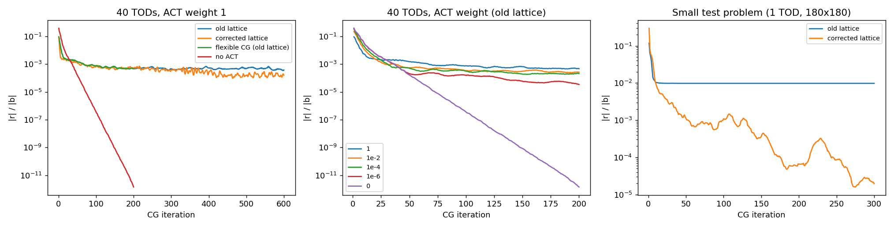
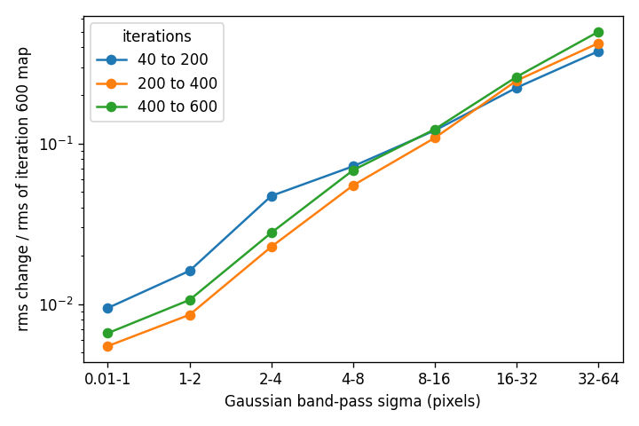
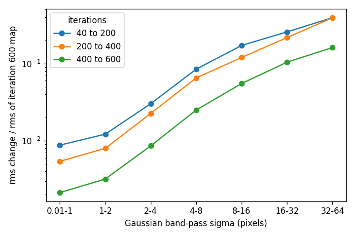

<title>Needlet Convergence Investigation</title>
<meta name="claude:viewport-fit-sides" content="cover">
<link rel="stylesheet" href="https://fonts.googleapis.com/css2?family=IBM+Plex+Mono:wght@400;500&family=IBM+Plex+Sans:ital,wght@0,400;0,500;0,600;1,400&display=swap">
<style>
/* Layout: a reading column with a log table of hypotheses; same type and colour system as the main needlet page. */
:root {
  --bg: #f6f7f9;
  --surface: #ffffff;
  --fg: #1c2330;
  --muted: #566073;
  --line: #d9dde5;
  --accent: #2f4fb3;
  --accent-soft: #e6ebf9;
  --good: #1f6b3a;
  --good-soft: #e3f2e8;
  --bad: #9b2c2c;
  --bad-soft: #f8e5e5;
  --warn: #9a5b00;
  --warn-soft: #fbf0dc;
  --code-bg: #eceff4;
  --sans: "IBM Plex Sans", system-ui, -apple-system, "Segoe UI", sans-serif;
  --mono: "IBM Plex Mono", ui-monospace, "SF Mono", Menlo, monospace;
}
@media (prefers-color-scheme: dark) {
  :root:not([data-theme="light"]) {
    --bg: #12161d;
    --surface: #1a2029;
    --fg: #e4e8ef;
    --muted: #9aa5b8;
    --line: #2c3544;
    --accent: #8fa8f0;
    --accent-soft: #232c46;
    --good: #7fcf9b;
    --good-soft: #1b3326;
    --bad: #f0a0a0;
    --bad-soft: #3a2020;
    --warn: #e5b469;
    --warn-soft: #3a2f1a;
    --code-bg: #232b38;
    color-scheme: dark;
  }
}
:root[data-theme="dark"] {
  --bg: #12161d;
  --surface: #1a2029;
  --fg: #e4e8ef;
  --muted: #9aa5b8;
  --line: #2c3544;
  --accent: #8fa8f0;
  --accent-soft: #232c46;
  --good: #7fcf9b;
  --good-soft: #1b3326;
  --bad: #f0a0a0;
  --bad-soft: #3a2020;
  --warn: #e5b469;
  --warn-soft: #3a2f1a;
  --code-bg: #232b38;
  color-scheme: dark;
}
* { box-sizing: border-box; }
body {
  background: var(--bg);
  color: var(--fg);
  font-family: var(--sans);
  font-size: 16px;
  line-height: 1.6;
  padding-block: 40px 72px;
  padding-left: max(16px, env(safe-area-inset-left, 0px));
  padding-right: max(16px, env(safe-area-inset-right, 0px));
}
main { max-width: 820px; margin: 0 auto; min-width: 0; }
h1, h2, h3 { text-wrap: balance; line-height: 1.2; margin: 0; }
h1 { font-size: clamp(1.9rem, 5vw, 2.6rem); font-weight: 600; letter-spacing: -0.02em; }
h2 { font-size: 1.35rem; font-weight: 600; margin-top: 56px; letter-spacing: -0.01em; }
h3 { font-size: 1.05rem; font-weight: 600; margin-top: 32px; }
p { margin: 12px 0 0; max-width: 68ch; }
.lede { font-size: 1.1rem; color: var(--muted); margin-top: 16px; }
.meta { font-family: var(--mono); font-size: 0.78rem; color: var(--muted); text-transform: uppercase; letter-spacing: 0.08em; margin-bottom: 14px; }
code { font-family: var(--mono); font-size: 0.86em; background: var(--code-bg); padding: 1px 5px; border-radius: 3px; }
a { color: var(--accent); }
ul.tight { margin: 10px 0 0; padding-left: 20px; max-width: 68ch; }
ul.tight li { margin-top: 6px; }
.tablewrap { overflow-x: auto; margin-top: 16px; }
table { border-collapse: collapse; font-size: 0.92rem; width: 100%; min-width: 560px; }
th, td { text-align: left; padding: 8px 12px; border-bottom: 1px solid var(--line); vertical-align: top; }
th { font-weight: 500; color: var(--muted); font-size: 0.8rem; text-transform: uppercase; letter-spacing: 0.06em; }
td.num, th.num { text-align: right; font-variant-numeric: tabular-nums; }
.pill { display: inline-block; font-family: var(--mono); font-size: 0.74rem; padding: 1px 8px; border-radius: 999px; white-space: nowrap; }
.pill.no { background: var(--bad-soft); color: var(--bad); }
.pill.yes { background: var(--good-soft); color: var(--good); }
.pill.part { background: var(--warn-soft); color: var(--warn); }
.pill.info { background: var(--accent-soft); color: var(--accent); }
.summary { border: 1px solid var(--accent); background: var(--accent-soft); border-radius: 6px; padding: 14px 18px; margin-top: 24px; }
.summary p { margin: 0; }
.summary p + p { margin-top: 10px; }
.note { background: var(--warn-soft); border-radius: 6px; padding: 12px 16px; margin-top: 16px; max-width: 68ch; font-size: 0.95rem; }
.note b { color: var(--warn); }
figure { margin: 24px 0 0; }
figure img { display: block; width: 100%; height: auto; border-radius: 6px; border: 1px solid var(--line); background: #fff; }
figcaption { font-size: 0.88rem; color: var(--muted); margin-top: 8px; max-width: 68ch; }
.pair { display: grid; grid-template-columns: 1fr 1fr; gap: 12px; margin-top: 24px; }
.pair figure { margin: 0; min-width: 0; }
pre { font-family: var(--mono); font-size: 0.82rem; background: var(--code-bg); padding: 12px 16px; border-radius: 6px; overflow-x: auto; margin: 12px 0 0; line-height: 1.5; }
footer { margin-top: 64px; padding-top: 16px; border-top: 1px solid var(--line); color: var(--muted); font-size: 0.88rem; }
@media (max-width: 620px) { .pair { grid-template-columns: 1fr; } }
</style>

<main>
<div class="meta"><a href="https://claude.ai/artifact/83yLdSf6RiKEEh5Z6yDwkU">Needlet Mapmaking</a> · investigation log · MOOJ1142</div>
<h1>Needlet convergence investigation</h1>
<p class="lede">Why the CG solve stalls once ACT is in the system, what we tested, and what turned out to be wrong.</p>

<div class="summary">
  <p><b>Found and fixed:</b> every band's lattice was undersampled by a factor of √2, because <code>get_downsamps</code> compared a length computed from the needlet box with the map side. The block preconditioner could not see the top of each band, so CG could not reduce the residual there. With the lattice taken from the filter support, the large-scale maps converge: on 40 TODs the change between iterations 400 and 600 is 0.16 at the largest scale, against 0.50 before.</p>
  <p><b>Still open:</b> with ACT in the system the residual converges slowly and ends well above the M2-only solve, which reaches 1e-12. On the corrected lattice it is 1.6e-4 after 600 iterations and still falling in steps. The cause is not known.</p>
</div>

<h2>The symptom</h2>
<p>With M2 alone the CG converges: the relative residual |r| / |b| reaches 1e-10 by iteration 80 on 106 TODs and 1e-12 on 40 TODs. Once the ACT term is added to the operator and the right-hand side, the residual sits near 1e-3 (106 TODs) or 5e-4 (40 TODs) for hundreds of iterations, and the large-scale part of the map keeps moving by 13–20% every 40 iterations. The preconditioner is the same in both cases.</p>

<figure>
  
  <figcaption>Left: 40 TODs with ACT at full weight, old lattice, corrected lattice, flexible CG, and no ACT. Middle: the same data with ACT scaled down. Right: the small test problem with the old and corrected lattice.</figcaption>
</figure>

<h2>What we tested, in order</h2>
<div class="tablewrap">
<table>
  <tr><th>Test</th><th>Result</th><th>Verdict</th></tr>
  <tr><td>Operator and preconditioner symmetry</td><td>Operator symmetric to about 1e-18, preconditioner to 4e-11</td><td><span class="pill no">not the cause</span></td></tr>
  <tr><td>Solve with no ACT, 106 TODs</td><td>Residual 2.3e-5 at iteration 40, 2.8e-9 at 80, about 1e-10 after; maps do not change from iteration 40</td><td><span class="pill info">ACT is the difference</span></td></tr>
  <tr><td>True residual b − A x against the recursive one</td><td>Both 1.11e-3 at iteration 60 (106 TODs)</td><td><span class="pill no">no drift</span></td></tr>
  <tr><td>Residual by band (106 TODs, 60 iterations)</td><td>Band 3, the top ACT band, holds 55% of the squared residual; a ripple of about 2′, the ACT beam; 72% inside the footprint</td><td><span class="pill info">points at band 3</span></td></tr>
  <tr><td>Preconditioner ridge 1e-5, 1e-2, 1e-1 (default 1e-3)</td><td>2.7e-3, 1.21e-3, 1.19e-3 against 1.11e-3 at iteration 60</td><td><span class="pill no">not the cause</span></td></tr>
  <tr><td>ACT only in bands 0–2, and ACT in every band</td><td>6.5e-3 (all in band 2) and 1.03e-3 (spread over bands 3–9), against 1.11e-3</td><td><span class="pill no">the cutoff is not the cause</span></td></tr>
  <tr><td>ACT-only solve, no TODs (<code>--act-only</code>)</td><td>Residual flat at 9.3e-4 from iteration 20 to 60, all in band 3, at 8–12 cycles per map: above the band-3 lattice Nyquist of 10</td><td><span class="pill yes">found the lattice problem</span></td></tr>
  <tr><td>ACT-only with the lattice from the filter support</td><td>Residual 5.7e-7 at iteration 200, then drifts up to 1.4e-4 at 300</td><td><span class="pill yes">confirmed</span></td></tr>
  <tr><td>Full solve, 40 TODs, corrected lattice, 200 iterations</td><td>5.0e-4 against 4.7e-4 with the old lattice. The aliasing peaks of the residual spectrum are gone, and the residual now sits at 100–400 cycles per map</td><td><span class="pill part">same residual at 200 iterations</span></td></tr>
  <tr><td>Flexible CG (Polak–Ribière), old lattice</td><td>4.65e-4 against 4.72e-4 at iteration 200</td><td><span class="pill no">not the cause</span></td></tr>
  <tr><td>No ACT, 40 TODs</td><td>1.4e-12 at iteration 200, every band about 1e-13</td><td><span class="pill info">same as on 106 TODs</span></td></tr>
  <tr><td>ACT weight scaled by 1, 1e-2, 1e-4, 1e-6, 0 (40 TODs)</td><td>4.7e-4, 2.7e-4, 2.1e-4, 3.5e-5, 1.4e-12 at iteration 200</td><td><span class="pill part">floor does not scale with the weight</span></td></tr>
  <tr><td>Small test problem (1 TOD, 180 × 180, ACT in bands 0 and 1)</td><td>Old lattice: flat at 9.8e-3 from iteration 20, all in band 1. Corrected: 1.1e-3 at iteration 100, 6.6e-5 at 200, 2.0e-5 at 300</td><td><span class="pill yes">hard floor removed</span></td></tr>
  <tr><td>40 TODs to 600 iterations, old against corrected lattice</td><td>See the table below</td><td><span class="pill yes">large scales converge</span></td></tr>
</table>
</div>

<h2>The lattice problem</h2>
<p>Each band's coefficients live on a lattice that is as coarse as the band allows. <code>WavSkyMap.get_downsamps</code> took the band limit from <code>get_need_lims</code>, which converts the highest wavenumber to a length with π / (k δk) and δk = 2π / L, where L is the size of the needlet box. <code>twores_ex.py</code> and the test helper build the needlet with <code>L = n · pixsize · √2</code>, while <code>get_downsamps</code> compares the length with the map side. The number of samples across the map came out too small by √2, so every lattice was √2 too coarse. Measured on the 480-pixel map, bands 1–5 had 1.37–1.42 times too few samples for Nyquist. With <code>L = n · pixsize</code> the ratio is 0.97–1.00.</p>
<p>Counting degrees of freedom shows why that matters. A band's modes fill a disc in Fourier space, about π·k<sub>max</sub>² of them. A Nyquist lattice has about (2·k<sub>max</sub>)² points, which is 1.27 times more. The old lattice had about 2·k<sub>max</sub>² points, fewer than the modes, in every band from 1 to 6 (band 3 on the 106-TOD map: 400 points for 548 modes). The preconditioner works through the lattice, so every direction it can produce lies in a subspace smaller than the band. CG builds its search directions from the preconditioned residual, so it can never reduce the residual outside that subspace, and the residual stays flat. The small test problem shows this most clearly, with a residual flat to three digits entirely in the top ACT band.</p>
<p>The fix is <code>get_downsamps(tol)</code>, which reads the highest wavenumber of each filter from the filter array and applies Nyquist, independent of L. In <code>twores_ex.py</code> it is <code>--lattice-tol 1e-3</code>. The default is unchanged, so old caches stay valid. The code changes are logged in <code>reports/code_changes.md</code>.</p>

<h2>What the corrected lattice changes</h2>
<p>40 TODs, ACT at full weight, 600 CG iterations, same data and settings.</p>
<div class="tablewrap">
<table>
  <tr><th>Iteration</th><th class="num">Old lattice |r|/|b|</th><th class="num">Corrected lattice |r|/|b|</th></tr>
  <tr><td>40</td><td class="num">1.8e-3</td><td class="num">1.4e-3</td></tr>
  <tr><td>200</td><td class="num">4.7e-4</td><td class="num">5.0e-4</td></tr>
  <tr><td>300</td><td class="num">4.7e-4</td><td class="num">3.6e-4</td></tr>
  <tr><td>400</td><td class="num">5.3e-4</td><td class="num">2.5e-4</td></tr>
  <tr><td>500</td><td class="num">4.8e-4</td><td class="num">1.5e-4</td></tr>
  <tr><td>600</td><td class="num">3.8e-4</td><td class="num">1.6e-4</td></tr>
</table>
</div>
<p>The old lattice stays between 3.8 and 6.6e-4 after iteration 200. The corrected one plateaus until about iteration 250, then drops in steps, and ends 2.4 times lower. The maps differ more clearly. Change of the map between saved iterations, relative to the rms of the last map, by Gaussian band-pass (sigma in pixels):</p>
<div class="tablewrap">
<table>
  <tr><th>Interval</th><th>Lattice</th><th class="num">2–4</th><th class="num">4–8</th><th class="num">8–16</th><th class="num">16–32</th><th class="num">32–64</th></tr>
  <tr><td>200 → 400</td><td>old</td><td class="num">0.02</td><td class="num">0.05</td><td class="num">0.11</td><td class="num">0.25</td><td class="num">0.42</td></tr>
  <tr><td>200 → 400</td><td>corrected</td><td class="num">0.02</td><td class="num">0.07</td><td class="num">0.12</td><td class="num">0.22</td><td class="num">0.39</td></tr>
  <tr><td>400 → 600</td><td>old</td><td class="num">0.03</td><td class="num">0.07</td><td class="num">0.12</td><td class="num">0.26</td><td class="num">0.50</td></tr>
  <tr><td>400 → 600</td><td>corrected</td><td class="num">0.01</td><td class="num">0.02</td><td class="num">0.06</td><td class="num">0.10</td><td class="num">0.16</td></tr>
</table>
</div>
<p>With the old lattice the largest scales change by 0.38, 0.42, then 0.50 over successive intervals, so they are not settling. With the corrected lattice they change by 0.39, 0.39, then 0.16.</p>
<div class="pair">
  <figure><figcaption>Old lattice.</figcaption></figure>
  <figure><figcaption>Corrected lattice.</figcaption></figure>
</div>

<h2>What is still unexplained</h2>
<ul class="tight">
  <li><b>The residual with ACT stays far above M2-only.</b> The corrected-lattice residual is 1.6e-4 at iteration 600, against 1e-12 without ACT. The weight test shows the gap does not shrink in proportion to the ACT weight: at a weight of 1e-6 the residual is still 3.5e-5 at iteration 200.</li>
  <li><b>A guess, untested:</b> M2 alone leaves some modes weakly constrained, such as large scales removed by the common-mode subtraction. Any ACT term turns those from exact nulls into very small nonzero eigenvalues, and ACT's right-hand side puts real signal into them, so CG has to resolve a continuum of tiny eigenvalues. This would fit the weight test.</li>
  <li><b>Where it runs out:</b> the large-scale maps are still changing by 16% between iterations 400 and 600 at the largest scale. We don't know yet where they settle.</li>
  <li><b>Long runs of the ACT-only solve drift</b> after about iteration 200, from 5.7e-7 up to 1.4e-4 at 300. This looks like rounding growing along directions no data constrain. It was not investigated.</li>
</ul>
<div class="note"><b>What has not been done:</b> the 106-TOD solve on the corrected lattice, which needs the M2 response re-probed on the finer lattices, and the earlier 40-TOD and 106-TOD maps in the main report, which still use the old lattice.</div>

<h2>How to reproduce</h2>
<pre>twores_ex.py ... --direct --cg 600 --cg-tol 0 --cg-save 40 200 400 600 --resdiag --lattice-tol 1e-3
twores_ex.py ... --act-only            # ACT term alone, no TODs
twores_ex.py ... --act-ivar-scale 1e-4 # ACT weight
twores_ex.py ... --ridge 1e-5          # preconditioner shift
twores_ex.py ... --flexible            # Polak-Ribiere CG
twores_ex.py --debug ...               # small test problem
examples/plot_residual_curves.py       # figure above
examples/cg_convergence.py             # map change per scale</pre>
<p>Run outputs are under <code>/mnt/welch/USERS/jorlo/needlets/</code> in <code>lat40/</code> (40 TODs), <code>all106_*</code> (106 TODs) and <code>dense_dbg*</code> (small problem).</p>

<footer>Code: <code>examples/twores_ex.py</code> and <code>minkasi/needlet/needlet.py</code> on branch <code>needlet</code>, commits <code>5009a1d</code> and <code>3d54c20</code>. Numbers come from the run logs listed above.</footer>
</main>
